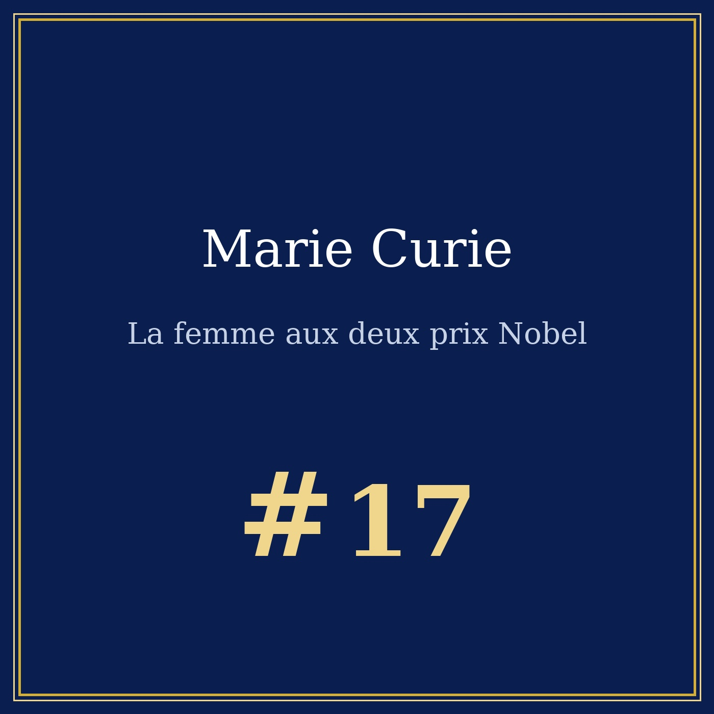
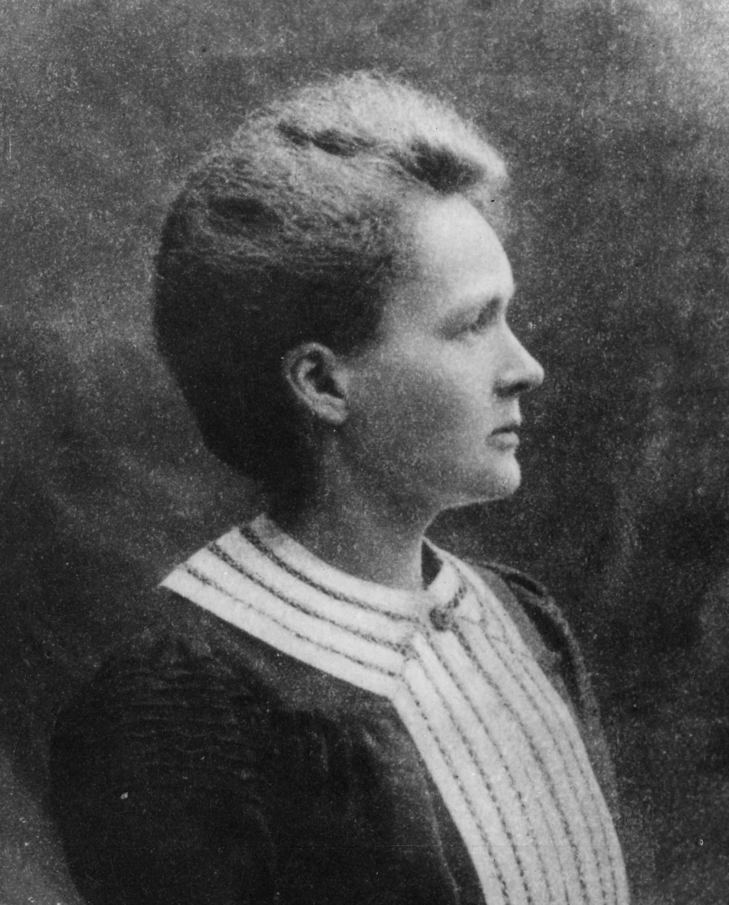

Portrait n°17 — la physicienne qui a fait briller le radium
Œuvre de fiction radiophonique et biographique à caractère historique et patrimonial. Les faits présentés dans cet article sont réels et sourcés ; l'entretien est une reconstitution imaginée.


🎧 Écoutez le portrait : Marie Curie, la femme aux deux prix Nobel, 13 min 07 — Écouter sur Spotify →
Marie Curie naît le 7 novembre 1867 à Varsovie, alors sous domination russe, capitale d'un royaume polonais morcelé entre trois empires. Née Maria Skłodowska, elle perd sa mère et son frère aîné de la tuberculose, et elle jure de ne plus jamais la voir : elle ne travaillera plus jamais seule.
La Pologne n'a pas d'université, et les femmes n'ont pas le droit d'y entrer. Marie a dix-sept ans quand elle part à Paris, avec pour seule fortune une couverture de laine sur une caisse, et elle découvre la Sorbonne fermée aux femmes. Elle monte une « université volante » — un petit groupe d'étudiants réunis à l'appartement de sa sœur Bronisława, autour d'une lampe, qui récitent par cœur. En 1893, elle est la première femme à obtenir un doctorat en France.
En 1894, elle rencontre Pierre Curie. Ensemble, ils cherchent pourquoi l'uranium émet spontanément une lueur dans le noir. Dans un hangar de la rue Lhomond, ils travaillent pendant quatre ans sur des tonnes de pitchblende broyée, ils en isolent le polonium (1898) puis le radium — un élément si radioactif qu'une feuille de sa poche suffisait à rendre visibles dans le noir ses propres doigts.
Le prix Nobel de physique arrive en 1903, partagé avec Pierre et Becquerel. En 1911, elle reçoit le prix Nobel de chimie — seule personne au monde à avoir obtenu deux Nobel dans deux sciences différentes. En 1906, elle devient la première femme professeur de physique à la Sorbonne.
En 1914, la France ouvre la guerre sans radiographie de campagne. Marie Curie organise alors une mobilisation civique :
« Les petites Curie » — une vingtaine de voitures radiologiques montées sur des camions, qui sillonnent les lignes de front dès 1914-1915. Elle invente elle-même l'appareil de radiographie de proximité (« radioscope »), se rend sur le front, et obtient de lui-même le prix de la Croix de guerre — la première fois qu'une femme en reçoit un.
En 1921, la guerre du radium : elle découvre que les États-Unis ont extrait du radium des mines du Congo et l'ont vendu au gramme plus cher que l'or — sans jamais lui payer ni l'indemniser. Le prix du radium s'effondre : de 700 000 dollars le gramme à 100 000. Elle obtient réparation, et riposte avec « La guerre du radium ».
Refusée à l'Académie des sciences en 1920 — le quorum est alors exclusivement masculin — elle obtient en 1923 le prix de l'Institut Nobel, et reçoit en 1929 un doctorat honoris causa à l'Université de Lyon pour son « Pierre Curie » (1923), où elle écrit : « Rien dans la vie n'est à craindre, tout est à comprendre. » Elle voudrait revenir un jour à Varsovie : l'Institut du Radium y est inauguré en 1932. Elle meurt le 4 juillet 1934, d'une anémie aplastique causée par les rayons X. Ses carnets de laboratoire sont encore radioactifs aujourd'hui, et il faut les manipuler avec des gants.
Après Pythagore et la musique des sphères, le duel des diapasons 432 vs 440, Beethoven face au silence et Winfried Schumann face au murmure de la Terre, la série touche ici à la science elle-même : une femme qui a mesuré la matière, et qui a payé de sa vie pour l'avoir fait.